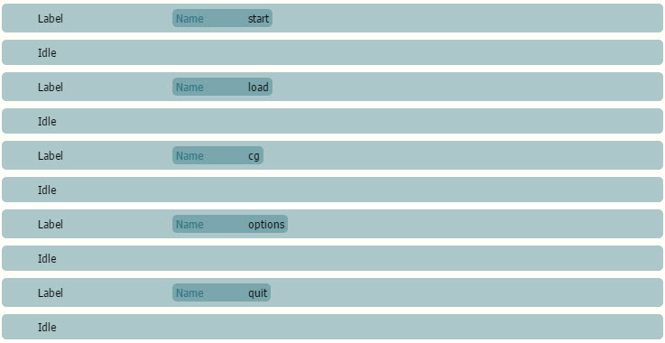
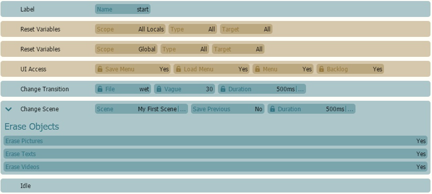

Now that you have come this far, it's time for us to create our very own custom title screen! Visual Novel Maker provides tools to allow you to event your own UI just in case theJSONformat intimidates you. For this tutorial, we're going to use anImage Map. Make sure to read theImage Map and Hotspot Tutorial first! This specific tutorial only shows you how to create an Evented Title Screen and supports default options.If you want to event all the other UIs, there is a sample project that you can access.
Preparing your Graphics
We need to prepare two instances of our Title Screen. As usual, it's important to remember that both versions must be at the same size. Here is an example image:
After that, we must add aSystem -> UI Accessand set Save Menu, Menu and Backlog to No.
The purpose of this is so the other menu options won't appear at the title screen.
We will create a bunch ofBasic -> Labelnamed after the commands and put aBasic -> Idleat the end of each one. It is necessary so when you select an option, it won't play the other labels. It would look something like this:

Setting up New Game or Start
In this section, we are going to teach how to set up the 'New Game' of the game.
First, we need to use at least twoSystem -> Reset Variables.We will set it to All Locals and Global Type All and Target All.This is so when a user restarts and returns to Title Screen, and since this is evented, it is necessary that we restart all data should they hit New Game.
We need to another instance ofUI Accessthat resetsSave Menu, Menu and Backlog to Yes.
Add aScene -> Change Sceneto the Scene you want the game to start. Make sure to set Erase Picture, Erase Text and Erase Videos to Yes, if you are using any of that. Once you are done, the label will look something like this:

Setting up Load Screen, Settings Menu, CG Gallery and Quit
There are different ways for us to set up the load screen. Is your Load Screen a Scene? Then just use Change Scene and direct it to the scene. However, if you want to use the default menus, we will have to useSwitch to Layout.For a reference of all usable names, refer toSwitch to Layout Reference List. Here's a step-by-step guide on how to do it:
 Basic -> Label named after the commands and put a
Basic -> Label named after the commands and put a  Scene -> Change Scene
Scene -> Change Scene